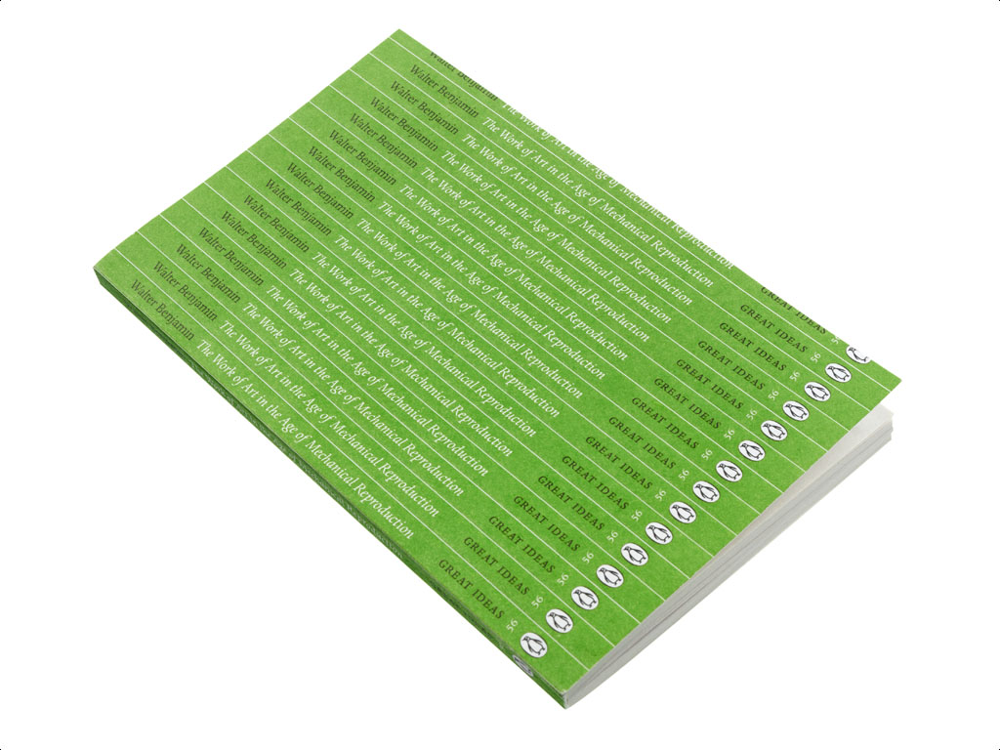
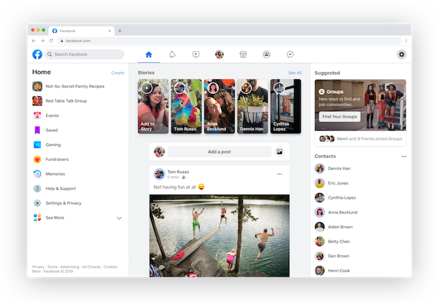
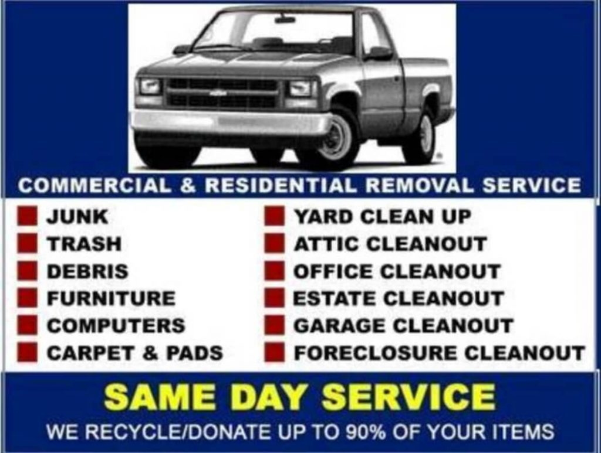
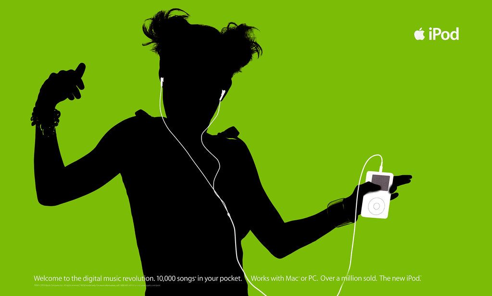

virtual museum
art on a screen
plan
- homework
- virtual museums
- intro to graphic design + tools
- work session
homework
check in about your design documents and your technical prototypes
- what is your idea?
- why is it interesting?
- what incertainties do you have?
mar / shalini / gilad
parts of berlin (city marker)
- boros collection
- user generated content
- problems with weather/angle?
jumana / spencer
playable books:
- keep track of what kids do
- have the books in conversation with each other
smrithi / ivory / hoya
oceania
- sounds of the waves
- somewhat separate from exhib
- multiple information sources
- connection w/ berlin
angelica / sree
red thread: create your own path
"search" " bookmark"
next steps
complete your design document with:
- complete the research to back up your claims
- graphic identity
- make some further progress on your prototype
- find a title
visual mockups
The first part of the design process is not only to come up with ideas, but rather to research what are the implications of the problems that you are trying to solve. Your task is now to complete the research to back up your claims.
If research is the base, the core of your project, the graphic identity is your coating, the thing that makes people realize that you are coherent and that you are recognizable. A graphic identity should be applicable to any kind of support/medium, and composes itself of things like color, font, logos, layouts, etc. You will have to find out how these formal elements represent the idea you are trying to convey.
Your prototype is going to be the thing that shows that you are able to deliver on your promise, and give a sense of what you are trying to achieve. Aim for short and robust rather than expansive and buggy.
virtual museum
how is a virtual museum different than a real one?
a remedy against "active dosing" (what you learn, social aspect, architectural aspect)
how is it different from using google?
curatorial aspect
The virtual museum is almost similar to the physical museum, but its existence is enabled by fast, multimedia technologies. The main difference with the real museum is the difference between copies and original. Can a copy be as good as an original?
the mission
what is the mission of the museum?
curatorial aspect
curation
instagram
narrative
research
multilayered
unidimensional
search for truth
single media (?)
search for questions
multiple media
focus on the origin of the piece
focus on the recipient of the piece
the process
how does having unique works of art enable the learning process?
attention
plaster casts
The mission of the museum is to make the visitors understand how the object they are seeing fits into the world, and into their lives.
Some of the properties that make some people prefer the original to the copy are (1) the aura and (2) the spatio-temporal context. To see an original, you have to have a bigger investment in time and energy than to see a copy, and this investment can make you want to have something in return, to get something from the artwork.
The fact that they have unique works of art is not the one and only property of museum objects: they become unique as they enter the museum, by virtue of the mission of preservation that is the museum's. Because for copies to exist, you need an original. So if museums do have the originals, the issue is now that of display.
How do you display an artwork? With as much information as possible? With as little? What information makes truly sense in a museum?
the means
what are the means that the museum uses?
The communication of information (visual, or aural), limited to the area of the museum building.
connected technologies
what does the web bring to the table?
what kind of information do you access on the web?
if more people can access it, then does that value diminish?
different architecture
replicas METADATA
Encyclopedia, portability, cross-referencing. It helps the development of connected learning, and democratizes access.
the original and the replica

walter benjamin
the work of art in the age of mechanical reproduction
"aura"
The evolution of the ability to reproduce works of art resulted in the loss of its aesthetic value through its unique claim to being an authentic original. Benjamin terms this value the work of art’s “aura” and the aura developed great ritualistic meaning over time. With reproduction made easier, cheaper and faster, this aura was diminished and along with it ritualistic value was replaced by exhibition value: when there’s more than duplicate, a greater number of can enjoy it. Art became product.
Benjamin claims that in times past the role of art has been to provide a magical foundation for the cult. Here the artwork’s use value was located in its central position within ritual and religious tradition. So, in a sense, his reading is a positive one: we are duplicating the art work in order to spread it to the masses and, in the process, taking down the unique aspect of the artwork, its singularity —and therefore worth and elitism.
"Even the most perfect reproduction of a work of art is lacking in one element: Its presence in time and space, its unique existence at the place where it happens to be." — This place is the called the cultural context; by changing the cultural context, one changes the meaning of the work.
isolated technologies
VR can help grasp the scale and existence of what is no longer (either exhibited or existing)
VR and AR can exist both within a museum, and outside a museum. It's then about context: because the layout of information on the Web is more prone to easy navigation, then it makes sense to have it available outside the physical bounds of the museum. However, this design language is not yet fully formed within the VR and AR application world, and therefore it's harder to provide the person interacting with a piece with a meaningful access to context. For now, it makes more sense to have them in a museum.
a note on fetishism
tech fetishism is focusing only on the form, to the detriment of the content.
file formats have pros and cons:

spatial understanding
important, but only worth it if you can touch and manipulate those objects
AR (and VR) can simply show things that are not there: either they're in the museum's collection or they've been destroyed.
the museum of the future
"A virtual museum has to define its target community/ies, its aims, its content and how this will be structured and delivered." -sylaiou
who is your audience? what would be their ideal virtual museum?
how does access to more information contribute to it?
how does access to more personalized information contribute to it?
These are the questions that you should keep in mind as you work your way through your design. The most important, again, is the audience.
break
11:50
graphic design
what is graphic design?
look pretty
sending a message through visual act
information
attraction
value
narrative
to a target group
Graphic design is the interaction of visual communication and communication design. It is the art and technique of putting things together in a visually engaging (and legible!) way such as to facilitate the communication of an idea, a message.
identity

Graphic design is not only a way to clearly communicate information, but also to communicate a feeling, an identity, such that your audience will engage with it.
components
hierarchy -> emphasis
balance -> rhythm
layout -> unity

how to
some basic components of graphic design are:
- fonts (serif vs. sans serif)
- color (palettes, warm or cold)
- spacing (size, white space, borders)
aligning
example


three software
photoshop
illustrator
indesign
vectors
rasters
surfaces
shapes
make posters
Photoshop is doing raster work: modifying the color, tonality of a pixel image, and doing some surface modifications.
Illustrator works on contours and shapes, therefore is used more for abstract representations and logos.
InDesign is used to put them all together. Essentially, InDesign is for making books or posters. It's very good at making blocks of things and aligning those blocks.
demonstration
- modifying a picture in photoshop
- drawing out a silhouette in illustrator (and other shapes)
- laying everything out in indesign
work session
homework
- flesh out your design document
- include some graphic elements (pictures, graphs, logos)
- continue working on your prototype